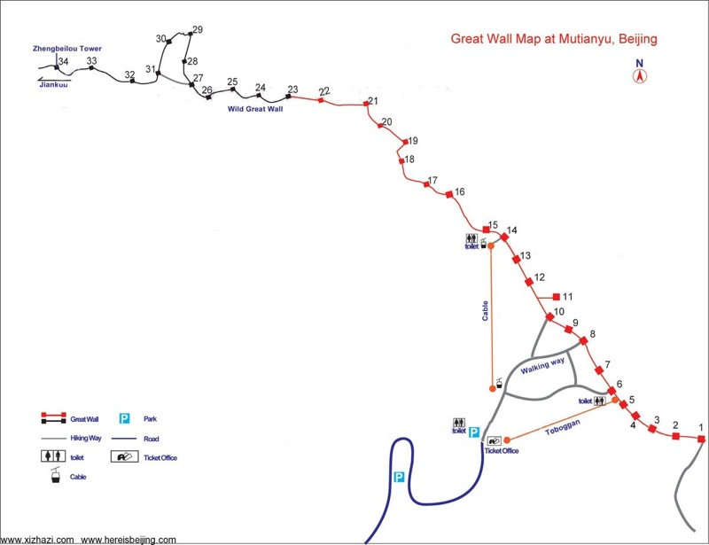

Intro
Lonely Planet China described Jiankou section as "stupefyingly gorgeous", "incomparable" and "sublime", with "tantalizing panoramic views of the Great Wall". See Jiankou's photos here. You'll understand why.Two weeks ago, we hiked the middle of this section; we were able to see the Sharp North Tower so high on the highest hill to our East but were unable to reach it due to timing and difficulty. The view up there will defintely be great. From the village in Jiankou basin, directly up hill to this tower, and then to Mutianyu, is the classic route in wikitravel and lonelyplanet. That's exactly where we're going this time!
Unlike last time, this is half hiking and half sightseeing. Uphill trail, wild great walls and restored area, each takes up about one third of our hiking time.
Jiankou-Mutianyu Day Hike May 9
Safety
The author, I, have not been there, though there has been extensive research. Neither is this an organized group with experienced group leaders; we’re exploring the wall together.
The trip shall be canceled in case of a sand storm or rain. In the case that it rains on Friday but not Saturday, wearing any sneakers will be strongly discouraged. Our trail is known as safest section of the deadly Jiankou section; it should be way easier than our group’s last hiking event. Even so, please be aware that danger will be often a step away; our balance could be seriously challenged.
Nobody in our group shall be held responsible for any other person's safety issues and accidents, except that we'll share the guide fee if one of us feels challenged and we'll adjust schedule because of one member's safety concerns.
Route
We're following a steep zigzag trail up to the wall at Zhengbeilou Tower, i.e. Sharp North Tower, at the left side of the map. Following the wall, we could cover about 20 towers, till we get to the trail leading to the gate of Mutianyu; we'll have 3 to 3.5 hours on the wall.
Meeting Location
Yungho King Dongzhimen， 永和大王东直门店，8 am. You'll find us at a table; and you don't have to pay for food or drink if you don't like to.
Date and Time
Depart from Dongzhimen: 8 am
Arrive back at Dongzhimen: 9 pm
Transport
Dongzhimen Transport Hub to Huairou Beidajie Station: Bus 916, ¥4.8(with transit card)，or, ¥12
Huairou Beidajie Station to Xi Zha Zi village, YiDui: taxi, ¥25 per person, plus a village fee of ¥20
Mutianyu to Huairou Bus Station: taxi, ¥25 per person
Huairou Bus Station to Dongzhimen: Bus 916, ¥4.8(with transit card), or ¥12
Money
Transport is 80 kuai in total. The villager's ladder onto the wall costs less than 5. Each meal costs 30 per person. No other cost is stated in this plan. I'm working with Dalin, our local contact, for a package deal, which could save us up to 20 kuai per person; she has a four-person car and is willing to pick us up at bus station in Huairou at a really low price and help bargaining the village fee by the way.
Alternative plan
We shall hire a minivan for all the transportation, if we have more than 7 people. This costs less than ¥120 per person and allows for much flexibility. If we wish, we could see the sunset on Mutianyu and enjoy the famous trout in a nearby trout farm for dinner. In this case, we should take ¥250 cash per person.
What to Prepare
Hiking shoes, sneakers with good grip; clothings that protect you from thorns and scratchy plants on the trail, and the cold weather on top of the wall
Travel insurance.
Cash: ¥200 suggested
A bottle of sports drink, or coconut water; 2.5L of water in total. I'm negotiating the deal that we buy 2L of water at the village, at a fair price.
Energy bars, chocolate, dried food, don't pack any heavy food; 150g of food is maximum
Suncream, sun glasses, hat with broad brims
Toilet paper and tissues
First-aid kit
Download the map, I'll share it on wechat
Get familiar with the map
Note this number: Dalin, our local contact, 13716180770
Resources for Our Group
Statistics
One-way transport time: 3.5 hours
Total hiking time: about 5 hours
Sunset Saturday: 7:16 pm
Highest point: 1044m
Start height: 600m
The Weather Channel's ten day forecast
Plan by Beijing Hikers
This premium hiking agency has an excellent plan for the same route. Please also read their FAQ. They have great packing suggestion and hiking statitics, which may serve as our reference. They're mentioned here because their site aided my plan by a great deal.
WikiTravel
Hike from Jiankou to Mutianyu This hike starts in Xi Zha Zi village (village fee: ¥20 as of Feb 2014), at the foot of Jiankou Great Wall section. After buying the tickets take the first road left (Yi Dui - there should be staff around, who can confirm, that this is Yi Dui). Follow the road for a bit, until you see a blue sign to your left, saying this part of the Great Wall is closed. Take the path on the right of it (follow the red arrow! Do not take the left path, even though it is "a narrow dirt path" as mentioned in the Lonely Planet guide-book.) There will be more red arrows and dots along the way, eventually leading you to the Great Wall (Feb. 2014). You walk about a hour in medium-rough terrain where you will encounter some local villagers' ladders which you will have to use in order to climb the wall (¥5, none of those in Feb. 2014). After arriving at the Great Wall, head left (east) towards Mutianyu, a hike that will take you about 2-3 hours. The first 1,5 hours is on the unrestored area of the wall, the rest on the restored area. Add 0,5-1 hour if you choose to walk the Ox Horn, which is a more rough part of the wall (you can also skip it by following the signs). The hike can be done in sneakers, but hiking shoes would be a much better choice. Don't try to do the hike when it's wet, because it has some very (!) steep and slippery parts. While it would be totally possible to do the hike the other way round (from Mutianyu to Jiankou), finding transportation (probably back to Huairou) would be much harder to find.
Source: WikiTravel: Great Wall of China